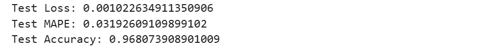

Gold Price Prediction using LSTM
A deep learning model to forecast 35 years of gold price data (1990-2025) using Long Short-Term Memory (LSTM) networks.
Data and Preprocessing
The project utilizes a dataset spanning 35 years of gold price history, containing daily prices from 1990 to 2025. The initial phase involves rigorous data cleaning: irrelevant columns ('Vol.', 'Change %') are dropped, date columns are converted to the correct format, and numerical data is cleaned of commas and converted to floating-point numbers for analysis.
Train-Test Split
The dataset is split into training and testing sets. The data from 1990 up to the end of 2024 is used for training the model, while the data for the year 2025 is reserved as the unseen test set to evaluate the model's predictive performance.
Model: "functional_1" ┏━━━━━━━━━━━━━━━━━━━━━━━━━━━━━━━━━┳━━━━━━━━━━━━━━━━━━━━━━━━┳━━━━━━━━━━━━━━━┓ ┃ Layer (type) ┃ Output Shape ┃ Param # ┃ ┡━━━━━━━━━━━━━━━━━━━━━━━━━━━━━━━━━╇━━━━━━━━━━━━━━━━━━━━━━━━╇━━━━━━━━━━━━━━━┩ │ input_layer (InputLayer) │ (None, 60, 1) │ 0 │ ├─────────────────────────────────┼────────────────────────┼───────────────┤ │ lstm (LSTM) │ (None, 60, 256) │ 264,192 │ ├─────────────────────────────────┼────────────────────────┼───────────────┤ │ dropout (Dropout) │ (None, 60, 256) │ 0 │ ├─────────────────────────────────┼────────────────────────┼───────────────┤ │ lstm_1 (LSTM) │ (None, 60, 128) │ 197,120 │ ├─────────────────────────────────┼────────────────────────┼───────────────┤ │ dropout_1 (Dropout) │ (None, 60, 128) │ 0 │ ├─────────────────────────────────┼────────────────────────┼───────────────┤ │ lstm_2 (LSTM) │ (None, 64) │ 49,408 │ ├─────────────────────────────────┼────────────────────────┼───────────────┤ │ dropout_2 (Dropout) │ (None, 64) │ 0 │ ├─────────────────────────────────┼────────────────────────┼───────────────┤ │ dense (Dense) │ (None, 32) │ 2,080 │ ├─────────────────────────────────┼────────────────────────┼───────────────┤ │ dense_1 (Dense) │ (None, 1) │ 33 │ └─────────────────────────────────┴────────────────────────┴───────────────┘ Total params: 512,833 (1.96 MB)
LSTM Model Architecture
The time series data is transformed into sequences using a sliding window. A window of 60 previous days is used as input features to predict the next day's price. The data is scaled using MinMaxScaler, which is crucial for neural network performance.
A deep learning model is constructed using Keras with three stacked LSTM layers (256, 128, and 64 units) and Dropout layers to prevent overfitting. The final output is produced by a Dense layer. The model uses the 'Nadam' optimizer and 'mean_squared_error' as its loss function.
Training & Evaluation
The model is trained for up to 150 epochs with a batch size of 16. To ensure optimal performance and prevent overfitting, an EarlyStopping callback is implemented to halt training when the validation loss stops improving over 25 consecutive epochs.
Performance Results
After training, the model's performance is evaluated on the unseen test set (data from 2025). It achieves a low test loss and a high accuracy of approximately 96.8%, calculated as (1 - Mean Absolute Percentage Error), demonstrating its strong predictive capability.

Prediction Results
Visualizing the model's performance on the test data.
Conclusion
The final plot clearly shows the model's predictions (in red) closely tracking the actual gold prices (in blue) for the test period. This visual confirmation, along with the high accuracy score, validates the LSTM model's effectiveness for time series forecasting of financial data.